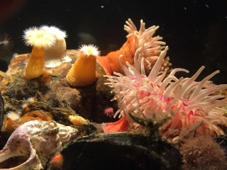

-

Marine Center in Ängelholm
Unique educational, fun and immersive experiences with a nautical connection.
-
Play
My Sea will become a meeting place in a joyful and credible way to learn about the ocean's impact on our planet.
-
Inspire
My Sea is a place of learning, science and research, recreation, playfulness, seriousness and confidence.
Our Vision
Our goals for the future of the Marina.
My sea will put Ängelholm on the map marine knowledge and learning about the Kattegat and the Sound. It will become the premier tourist destination for the region, so interesting and rewarding for visitors that they will come and experience new things again and again.
will give you the latest facts and findings about the ocean. And will be tend to your curiosity and inspire commitment so you may become a "sea hero!"
News
Up to date information.
We are preparing a new website for launch.
The Marina is open for 2017!
History
Learn about the origins of the Marina Project.
Project Marina Visitor Center has been going on during the period October 2012 to December 2014. The project consisted of two parts:
This second part of the project led on to the vision and creation of " My Sea - marine visitor center" in Ängelholm.
The project Marina Visitor Center has been preceded by several previously conducted feasibility studies in Ängelholm and Höganäs during 2010-2012. These projects have been funded by, among other things the Swedish rural development program LEADER, County Administrative Board of Skåne, Höganäs and Ängelholm municipalities and Nature Conservation in Ängelholm.
During the pre-study period and also during the project created temporary manned marine exhibitions in Skälderviken and Höganäs ports (sea experience center). Interest in exhibitions and its activities were great and were visited during the summers of 2012 about 4,000 visitors. The cove has SNCC continued with the manned utställninen for 3-4 weeks, subsequent summers. During these three periods (2013-15), it has been visited by more than 9500 people!